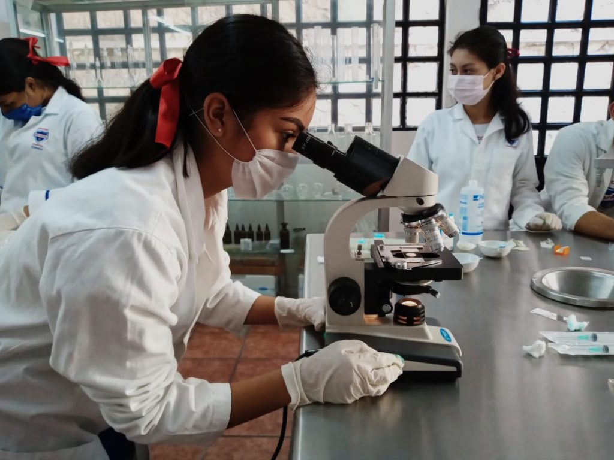

Laboratorista Clínico
Perfil de la carrera:
Esta especialidad forma profesionales capacitados para realizar análisis de muestras biológicas con fines diagnósticos. Los estudiantes adquieren conocimientos en áreas como hematología, microbiología, química clínica e inmunología, y aprenden a operar equipos de laboratorio con precisión y responsabilidad. Módulos de formación profesional:- Auxilia en los procesos básicos de laboratorio clínico
- Identifica microorganismos con base en técnicas microbiológicas
- Analiza fluidos corporales de interés clínico
- Analiza sangre con técnicas inmunohematológicas y hemostáticas
- Aplica técnicas de química clínica y pruebas especiales
Habilidades que desarrolla el estudiante:
- Toma y procesamiento de muestras biológicas
- Manejo de equipos y reactivos de laboratorio
- Aplicación de normas de bioseguridad
- Interpretación de resultados clínicos
- Elaboración de reportes técnicos
Campo laboral:
Los egresados pueden trabajar en hospitales, clínicas, laboratorios públicos y privados, bancos de sangre, centros de investigación o en la industria farmacéutica. También pueden continuar estudios en áreas de salud como medicina, bioquímica o biotecnología.Perfil de ingreso ideal:
Se recomienda tener interés por las ciencias de la salud, habilidades en biología y química, atención al detalle y compromiso con la ética profesional y el trabajo en equipo.
